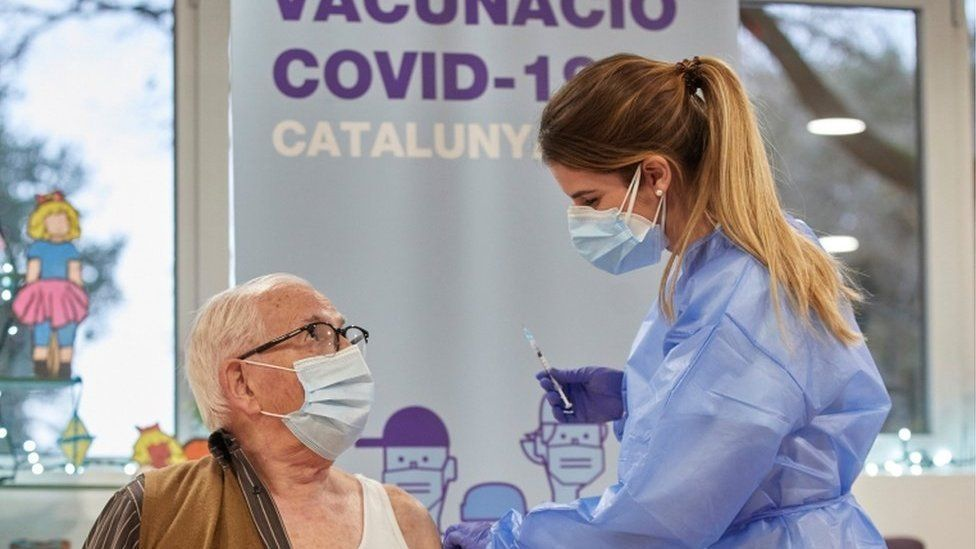

Covid: Whats the problem with the EU vaccine rollout?
The European Union has been criticised for the slow pace of coronavirus vaccinations in its member states.
It has introduced export controls on vaccines produced in the EU after its rollout was hit by supply problems and delays.
The UK, by comparison, has approved and distributed vaccines to its population significantly faster.
How does the EU vaccine scheme work?
The scheme, set up in June 2020, allows the EU to negotiate the purchase of vaccines on behalf of its member states. It says this can help reduce costs and avoid competition between them.
Member states do not have to join the scheme, but all 27 EU countries chose to do so.
El Salvador governing party set for big parliament win
El Salvador's governing party and its ally are set to win a two-thirds majority in the legislative assembly, preliminary results suggest.
With 80% of votes counted, the Nuevas Ideas (New Ideas) party, and its coalition partner, Gana, look on course to win 56 out of 84 seats.
The preliminary results are a blow to the left-wing FMLN and the right-wing Arena parties, which have dominated Salvadorean politics for decades.
Turnout in the election was at 51%.
It is the first time Nuevas Ideas, which was only registered as a party in 2018, has contested a legislative election.
If the preliminary results are confirmed and the coalition wins two-thirds of the seats - known as a supermajority - President Nayib Bukele will be free to choose new judges for the Supreme Court and a new attorney-general without having to negotiate with rival lawmakers.
Nigeria's school abductions: Why children are being targeted
Since December, more than 600 students have been abducted from schools in north-west Nigeria, highlighting a worrying development in the country's kidnap-for-ransom crisis.
Friday's kidnapping of nearly 300 students from the Government Girls Science Secondary School in Jangebe, Zamfara state, which ended with their release, was the second mass kidnap from schools in less than 10 days. Twenty-seven boys and their teachers who were taken from a school in Kagara, Niger state on 17 February were released on Saturday.
The authorities say recent attacks on schools in the north-west have been carried out by "bandits", a loose term for kidnappers, armed robbers, cattle rustlers, Fulani herdsmen and other armed militia operating in the region who are largely motivated by money.
Many here believe that a weak security infrastructure and governors who have little control over security in their states - the police and army are controlled by the federal government - and have resorted to paying ransoms, have made mass abductions a lucrative source of income.